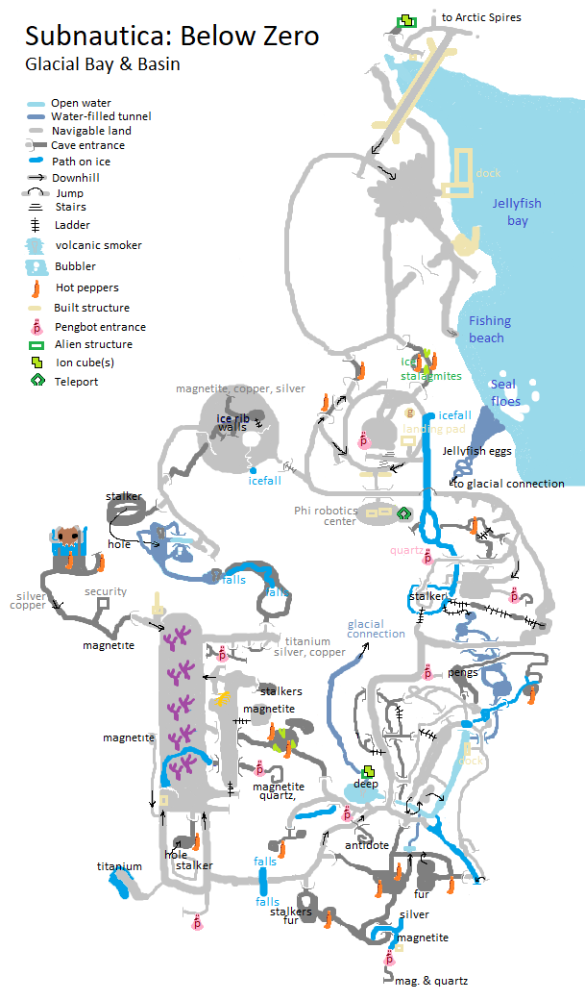

Creating Animated Meme GIFs on the Command-Line
Got sick of navigating the limitations of various online services to create animated gif memes, finally figured out how to do it manually. Not a universal process, just what worked for my situation. (Which is Ubuntu 21.10, "Impish".)
All of of the ffmpeg invocations could probably be combined into one, but I show the commands as I used them, as I was figuring each step out.
1. Download a video
Starting from a video on YouTube:
To download this locally,
install youtube-dl,
hit the YouTube share button to grab the video's encoded URL,
and:
youtube-dl https://youtu.be/6-gJMs6DwuE -o Ash.mp4
This gives me an 850KB .mp4 video file.
2. Split
I only want the final few seconds. To remove the start of the video, keeping from 6.5 seconds until the end:
ffmpeg -hide_banner -i Ash.mp4 -acodec copy -vcodec libx264 -ss 00:00:06.5 Ash-split.mp4
Args to ffmpeg are position sensitive. Specifying '-ss' (to split the file) before the input ('-i') can't create the split at an accurate location, since it has to guess whereabouts in the file the given timestamp will occur. But putting it after the input (as done here) means it can split accurately on the given timestamp, since the file has been processed by the time this arg gets actioned, so accurate timestamp/frame conversion is known, at the cost of having had to process even the parts of the video that are then discarded.
Vcodec of libx264 is specified because, according to stackoverflow, "scenes in mp4 are broken", whatever that means, and specifying "copy", as most people do, gives me an output with no video, only audio.
This results in a three second, 217KB .mp4 video file. (the following is just an image of it).

3. Crop
To crop out the black bars from the top and bottom:
ffmpeg -hide_banner -i Ash-split.mp4 -vf 'crop=iw:365' Ash-split-crop.mp4
Here, we crop it to the input width "iw", and 365 high. In the absense of any offset ordinates for the crop, ffmpeg defaults to centering them, so this 365 pixels are taken from the (spatial, vertical) middle of the video, which is exactly what we want.
This results in a three second, 220KB .mp4 video file.

4. Resize and convert to gif
ffmpeg -hide_banner -i Ash-split-crop.mp4 -vf 'scale=512:-1' Ash-split-crop-resize.gif
This results in a grainy-but-passable three second 750KB animated .gif:

The file size can be smaller, if you care, most easily by splitting a shorter video clip, reducing the frame rate, or reducing the 'scale' in this step.
Alternately, this could be done using ImageMagik's 'convert', but the result of that was a very large (10MB) file and played very slowly, and I wasn't immediately sure how to fix that.
5. Add text
Using Imagemagik's 'convert':
convert \
Ash-split-crop-resize.gif \
-coalesce \
-font impact -pointsize 36 -fill white -stroke black -strokewidth 2 \
-gravity north -annotate +0+0 'I can''t lie about your chances, but' \
-gravity south -annotate +0+0 'you have my sympathies' \
-layers Optimize \
Ash-split-crop-resize-text.gif
The '-coalesce' option removes all the .gif optimizations, then we apply the text labels, then the '-layers' option re-applies optimizations. Without this dance, the text is all twitchy and messy.
Voilà. Imagine sending it to a co-worker who is taking on a difficult task, like making changes to that thorny section of the codebase that nobody likes:

Subnautica: Below Zero
on Windows, published 2021. 
Subnautica, and its icy sequel, "Below Zero", have perhaps been my favorite games of the last few years. The majority of their run time takes place under the colorful waters of an alien ocean. It's been a joy to sit side-by-size with Zander for tense scuba cave dives, or piloting vehicles through vertiginous underwater cave systems, headlights straining through the murk to reveal wonders. It has inspired cake.
Part of the games take place on land though. I started drawing a map of Below Zero's Glacial Basin region just to keep track of where we'd been. To make sure we visited all the locations, found all the MacGuffins (I'm looking at you, pesky antidote), and experienced all that there was to experience.
But as those goals approached completion, I finished drawing it because it had become a therapeutic experience. Happily exploring away, mesmerised by the scenery, avoiding hostile wildlife, uncovering the ruins of ancient alien artifacts. Reckoning distances by eye, scribbling down what we found, updating and correcting the map as we went. Being lost in the experience. Simply a joy.
Reddit is encouraging me to tackle the tricky Actic Spires area, too. <Rubs hands>...
